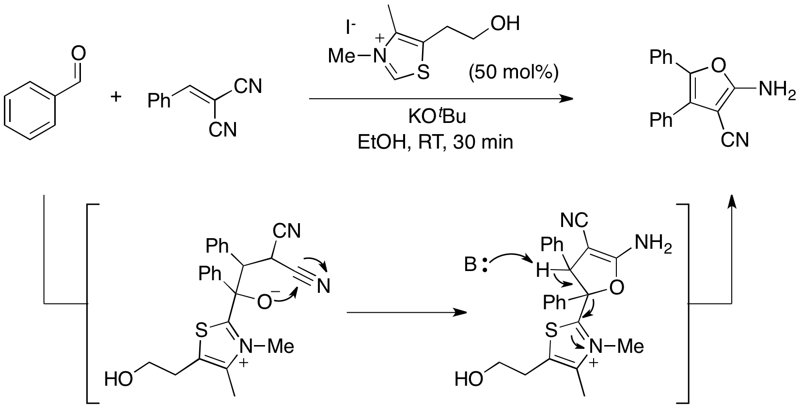
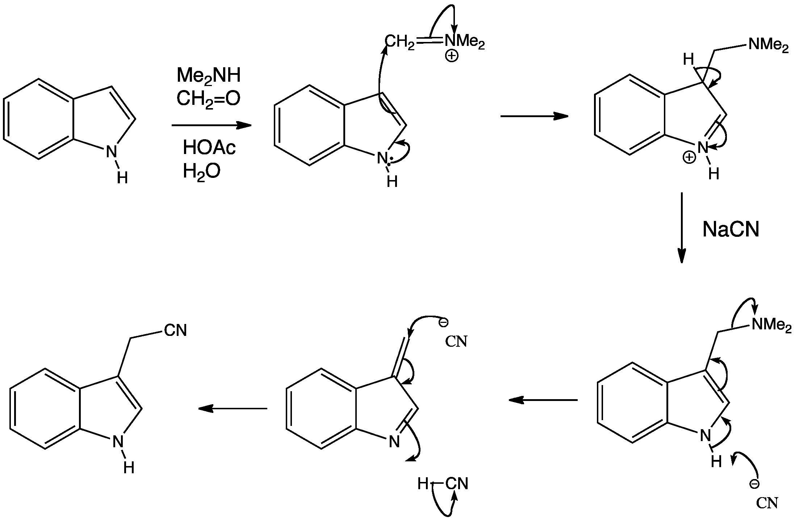

Introduction
Why should we study chemical bonding ?

The attractive force which holds various constituents (atoms, ions, etc.) together in different chemical species is called a chemical bond.
Since the
formation of chemical compounds takes place as a result
of combination of atoms of various elements in different
ways, it raises many questions. Why do atoms combine?
Why are only certain combinations possible? Why do some
atoms combine while certain others do not? Why do
molecules possess definite shapes?
Na → Na+ + e–
To answer such
questions different theories and concepts have been put
forward from time to time. These are Kössel-Lewis
approach , Valence Shell Electron Pair Repulsion (VSEPR)
Theory , Valence Bond (VB) Theory and Molecular Orbital
(MO) Theory . The evolution of various theories of valence
and the interpretation of the nature of chemical bonds have
closely been r elated to the developments in the
understanding of the structure of atom, the electronic
configuration of elements and the periodic table.
